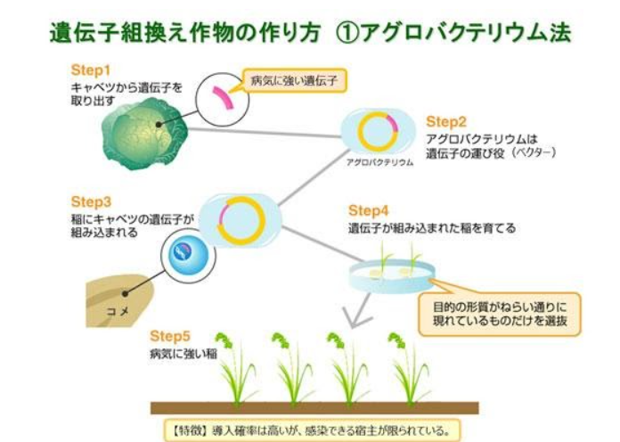
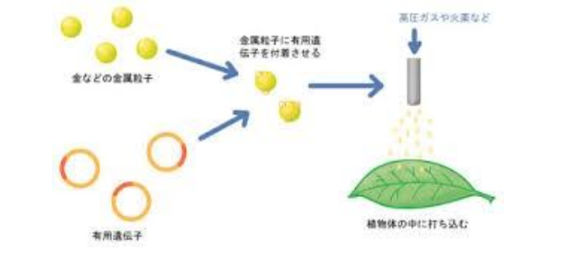

従来、作物の改良の主な手法としては、品種改良が主力を担ってきました。品種改良では人為的な選択、交雑、突然変異を発生させる手法などを用います。公的な農業試験場や畜産試験場などで進められているほか、穀物メジャーなどに代表される民間企業もビジネスとして参入しています。
しかし、この手法には、目的の特性が出るまで何世代も交配を行わなければならないという欠点があります。当然その費用も交配に時間がかかるにつれ増加していきます。その欠点を補うべく生まれた技術が遺伝子操作による品種改良です。これは、商業的に栽培されている植物に遺伝子操作を行い、新たな遺伝子を導入し発現させたり、内在性の遺伝子の発現を促進・抑制したりすることにより、新たな形質が付与された作物です。例えば、除草剤耐性作物は、ある特定の除草剤をまいても枯れないよう、遺伝子組み換え技術によって作られた作物です。栽培中に特定の除草剤を1～2回散布するだけで、作物に被害を与えることなく雑草だけを枯らすことができるため、農作業の負担を軽減することができます。除草剤耐性作物として、ダイズやトウモロコシ、ナタネ、ワタ、テンサイなどが実用化されています。他にも、遺伝子作物では、耐病性作物、栄養強化作物、害虫抵抗性作物などが作られています。
では、遺伝子組換えの基本的な技術について述べる。遺伝子組換えには、アグロバテリウム法と、パーティクルガン法の2つあります。
1つ目のアグロバクテリウム法では、アグロバクテリウム菌のもつ、特定の遺伝子を植物細胞の染色体に組み込む性質を利用した植物の形質転換を狙っています。アグロバクテリウムは土壌細菌の一種で、植物に感染すると、自分の遺伝子の一部であるT-DNA遺伝子を相手の植物に送り込む性質があります。感染した植物は根元にクラウンゴールと呼ばれる腫瘍を形成します。そして、アグロバテリウムの生存に必要な栄養素の、アミノ酸を合成するようになります。その性質を利用して、アグロバクテリウムが持つプラスミドのT-DNA遺伝子を除去し、そこに発現させたい目的の遺伝子を組み込み、目的の遺伝子を導入するという方法で、植物の遺伝子組換えが行われます。 近年では、イネやトウモロコシ、コムギなどの単子葉植物の遺伝子組換えに利用されています。

2つ目のパーティクルガン法では、金やタングステンなどの金属の微粒子にDNAをコーティングしたものを弾丸として、高速で射出して細胞内にDNAを導入します。細胞内への貫通力を高めるため、弾丸には高比重で、かつ、化学的に不活性であり生体に害を及ぼしにくいという理由から、金微粒子が好まれます。この方法は1987年に、コーネル大のSanfordらのグループにより初めて報告されました。以来、この方法で多くの植物の細胞においてトランジェントな遺伝子発現の例およびトランスジェニック植物育成例が報告されています。これらの例の中には、アグロバクテリウムで形質転換の困難な植物種またプロトプラスト培養の困難な植物など も含まれています。また、装置についても、Sanfordらの用いた火薬銃(ショットガン)式以外に、アーク放電式、窒素ガス圧式、圧縮空気圧(エアーガン) 式装置が報告されています。他にもエレクトロポーテーション法などもあります。

※エレクトロポーテーション法とは、形質転換法の一種である。細胞懸濁液に電気パルスをかけることで細胞膜に微小な穴を空け、DNAを細胞内部に送り込むことで、形質転換することができる。 この方法は、大腸菌や、動物細胞等の形質転換に使用されている。 他の形質転換法に比べて簡単であることが大きな利点ではあるが、専用の器械を必要とすることなど短所も多い。
どの方法にも共通することは、
1 ある生き物から特定のタンパク質に対応する遺伝子を取り出し、
2 改良しようとする生き物の細胞の中に遺伝子を導入し、
3 細胞がタンパク質を合成するようになる。
→ 結果として、細胞はタンパク質がもたらす新たな形質を有するようになる。
という流れがあることである。
日本の遺伝子組換え作物の流通や生産に関する知識の普及度は少ないです。
上の図1で、どの遺伝子組換え作物が日本で流通していると思うかという質問で、トウモロコシと答えたのは89％、大豆77％、小麦42％、なたね29％、綿20％、生花28％でした。2005年に、国内で流通しているのは、大豆、とうもろこし、なたね、綿及び生花です。トウモロコシと大豆除けば、なたね、綿、生花は国内で流通しているということを知っていたのは半分以下なのです。また、小麦は流通していない。このことから、日本で流通されている遺伝子組換え作物や国内での栽培状況などの情報が不足していると考えられます。
さらに、2005年に日本で遺伝子組換え作物が農家で栽培されていると答えたのは49％であり、わからないと答えたのは39％でした。しかし、2018年までも遺伝子組換え作物は国内の農家で栽培されていないのです。このことから、日本で流通されている遺伝子組換え作物や国内での栽培状況などの情報が不足していると考えられます。

流通される遺伝子組換え作物を遺伝子組換えであることを表示するよう法律で定めています。これに対してのアンケートでは、知っているが62％、なんとなくは知っている30％と回答した方を合わせると約9割であり、知らないが8％と回答した方は約1割でした。このことから、日本の遺伝子組換え作物の遺伝子組換えであることを表示することに関する知識の普及度は十分であると考えられます。
日本内でＧＭ作物の栽培や作成が普及していない理由として生態系への被害（以降生態リスクと総称）が不明瞭である点が挙げられます。ＧＭ作物を栽培することで発生すると考えられている生態リスクの内、以下の3つを取り上げることとします。
まず、ＧＭ作物の持つ生態リスクとして、ＧＭ作物が野生化、もしくは近縁種との交雑が行われた場合他の生物の生息域侵害や生息数への悪影響が発生すると考えられます。ＧＭ作物は対虫性や耐病性など生き残るための能力を遺伝子組み換えによって強化された作物です。つまり、野生の植物より生存能力が高いと考えられます。よって、競合が発生した場合ＧＭ作物が優位になり、不利になった既存の植物の生態域は狭まられ、最悪の場合その区域から絶滅すると考察できます。これはＧＭ作物とその近縁種が交雑した場合にもおなじことが言えます。
第二に論ずるＧＭ作物の生態リスクは、新ＧＭ作物の栽培に伴い害虫やウイルスが進化し、新ＧＭ作物の耐性を克服することで被害が増加する可能性であります。本論で述べたようにＧＭ作物の育成目標は対虫性や耐病性を得ることです。しかし、虫等の病害生物の世代サイクルは非常に短いため進化も早い。そのためすぐにＧＭ作物の耐性が効かない個体が生まれます。また、この進化した生物が他の生物に影響を与える可能性も考えられます。加えて、以上の問題点に長期的な観点を加えると、病害生物と人間の科学技術の競争が起こると考えられます。もしこれが現実になった場合、そのＧＭ生物の人体への影響や科学技術の進歩が間に合わない場合に起こる害虫生物の起こす影響等、考慮すべき項目は多岐に及びます。
第三に論ずるGM作物の生態リスクは、GM作物の生み出す遺伝子産物によって標的外生物への影響があげられます。現在のところ、野外で天敵昆虫に対してはっきりした悪影響を示した組換え作物は報告されていません。しかし、組換え作物が生態系や非標的生物へ及ぼす影響に関心が高まる中で、野外でのモニタリング調査の判定基準についても 議論を呼ぶかもしれません。標的害虫に対して、種特異的に働く天敵種の場合、組換え作物の導入によって、標的害虫 の密度が激減すると、それに依存する天敵種の密度も減少することが予測されます。
・コメントを残す
メールアドレス（必須）
コメント（必須）
※必須項目は必ずご入力ください